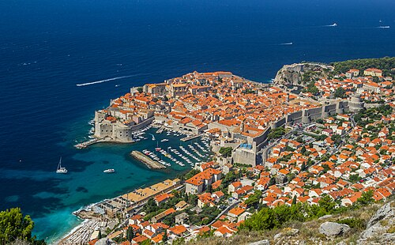

Dubrovnik, historically also known as Ragusa is a city in southern Dalmatia, Croatia, by the Adriatic Sea. It is one of the most prominent tourist destinations in the Mediterranean, a seaport and the centre of the Dubrovnik-Neretva County. In 2021, its total population was 41,562. Recognizing its outstanding medieval architecture and fortifications, UNESCO inscribed the Old City of Dubrovnik as a World Heritage Site in 1979.
